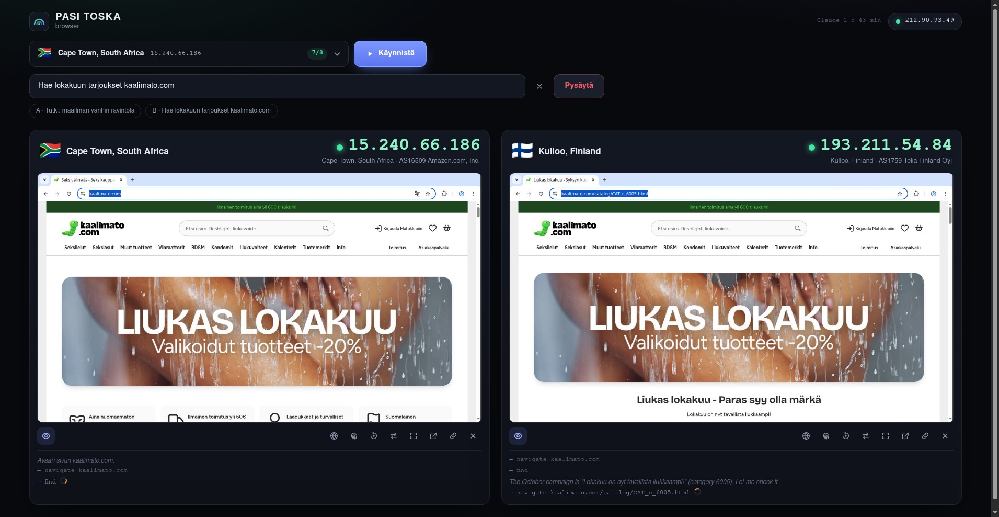
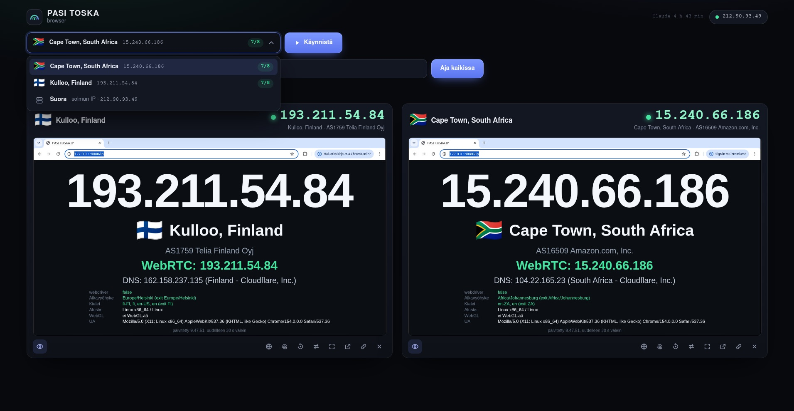
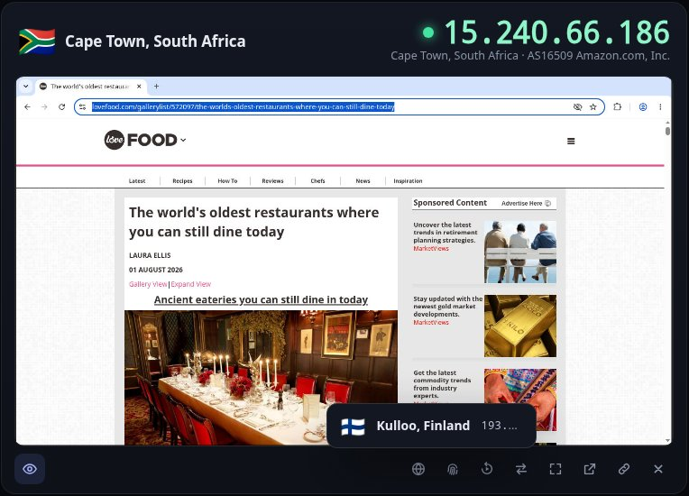
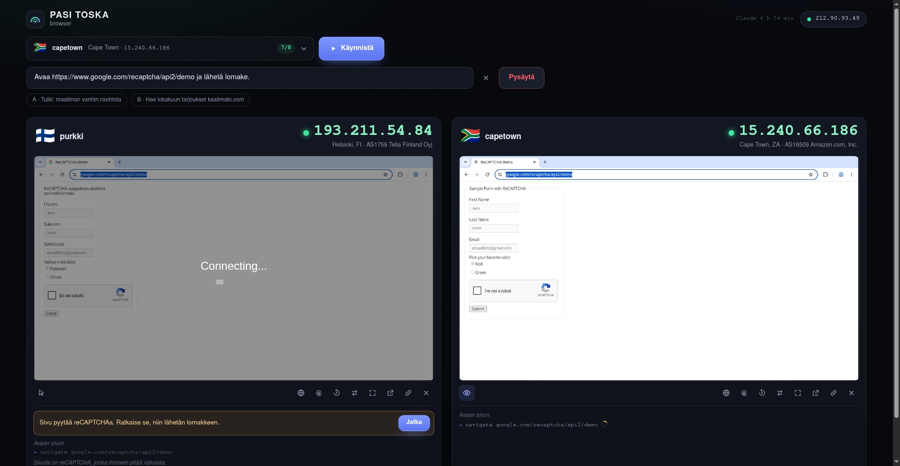
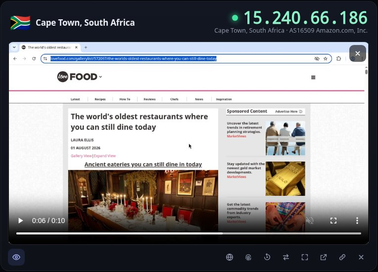
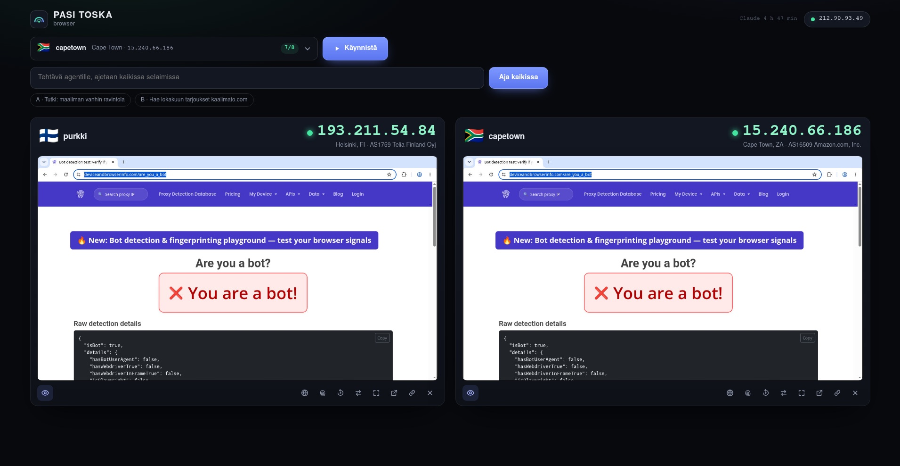
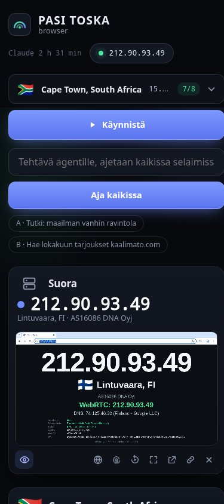

docker execillä.
AutomationControlled pois, oma profiili.:8931/mcp, kiinni Chromiumissa CDP:llä. CDP vain 127.0.0.1:ssä.:6080 (Node-silta x11vnc:hen, ei Pythonia).:8080: ready, exit, egress (ipinfo tunnelin läpi), iso IP-sivu.hydra ilman capabilityjä: murrettu sivu ei voi koskea palomuuriin.LANG, TZ).
DROP.wg0, salattu UDP exitille, vastaukset klusterin asiakkaille.| Mitattu | Tulos |
|---|---|
curl --interface eth0 | estetty |
| exit alas: DNS, IP-osoite, MCP-navigointi | kaikki epäonnistuvat, ei paluuta suoraan |
| oikea exit alas ja ylös (purkki) | ulosmeno takaisin 4 s, pod ei käynnisty uudelleen |
| IPv6 podissa | pois |
selainkäyttäjä iptables -F | ei oikeutta |
tests/e2e.sh ja live-testi n100-1 + purkki.katadocker run toimii kuten ennen, kubessa vain runtimeClassName.| Mitattu, N100 | runc | Kata |
|---|---|---|
| pod luotu, Chromium valmis | 2,2 s | 6,7 ... 7,6 s |
| muisti per selain | 473 Mt | ~1,25 Gt |
| CPU levossa per selain | 0,1 ... 0,3 ydintä | 0,13 ... 0,23 ydintä |
| exitin vaihto | 0,15 s | 0,6 ... 0,9 s |
| tunneli alas | ei ulosmenoa, palautus 10 s | |
hydra-exit: WireGuard-palvelin + NAT konttina, peer-pooli (oletus 8) volyymissä, MTU 1200 (Tailscale-polku 1280).hydra exit add (Rust CLI): rakentaa imagen etäkoneen arkkitehtuurille, kopioi vain jos image-id muuttui, käynnistää, kirjoittaa peerit kube-Secreteiksi (server-side apply).--label "Kulloo, Finland", korvaa UI:ssa ipinfo.io:n kaupunkiarvauksen.hydra exit add purkki root@purkki \
--endpoint 100.111.221.2 \
--label "Kulloo, Finland" \
--country FI --tz Europe/Helsinki \
--lang fi_FI.UTF-8 \
--kubeconfig .secrets/kubeconfig
# -> 8 Secretiä hydra-exit-purkki-0..7
# annotaatiot: label, ip, maa, tz, kieli
wg set, vanha poistetaan lopuksi.
claude-opus-5-5, adaptive thinking, MCP-työkalut suoraan podista.hydra login kopioi tokenin Macilta Secretiin, launchd päivittää 10 min välein. Token ei tulostu.ask_human(reason): CAPTCHA, kirjautuminen tai maksu pysäyttää ajon, näkymä muuttuu ohjattavaksi, "Jatka" jatkaa.
/dev/shm:ssä.GET /replay.mp4 liittää uusimmat segmentit ilman uudelleenkoodausta.
| Testi | Tulos |
|---|---|
| deviceandbrowserinfo.com | "You are a bot": CDP-automaatio näkyy sivulle ja web workeriin, ajastimen tarkkuus epäjohdonmukainen |
| CreepJS | 44 % "like headless", 0 % headless, 0 % stealth |
| WebGL / WebGPU | puuttuu / ei tuettu |
| BrowserScan | "Normal" |
| webdriver, aikavyöhyke, kieli | kunnossa, vastaavat exitiä |
Runtime.enable-jälki pois (paikattu Playwright tai ohjaus laajennuksen kautta), WebGL päälle (SwiftShader/ANGLE), TZ/LANG CDP:n emulaatiolla exitin vaihdossa.
cli: 15 testiä, panel: 29 testiä (+1 live-probe), alle sekunnissa.tests/e2e.sh: pelkkä docker, noin 45 s, siivoaa jälkensä:
exit add kahdesti (idempotentti), feikki-ssh ja -kubectldocker run -d --shm-size 1g \ -p 8931:8931 -p 6080:6080 -p 8080:8080 \ -e TZ=Europe/Helsinki -e LANG=fi_FI.UTF-8 \ hydra-browser claude mcp add --transport http browser \ http://localhost:8931/mcp
docker run -d --shm-size 1g --cap-add NET_ADMIN \ -v ./peer-7.conf:/etc/hydra/wg/wg0.conf:ro ...
/etc/hydra/wg, NET_ADMIN vain tunnelipodeille, /dev/shm emptyDir Memory.panel/deploy/panel.yaml, NodePort 30080, rooli pods + secrets.http://<panel>/b/<id>/mcp.docs/contract.md.hydra exit add mihin tahansa docker-koneeseen, myös kotiin NATin taakse.
images/, cli/, panel/, tests/, dokumentaatio docs/.